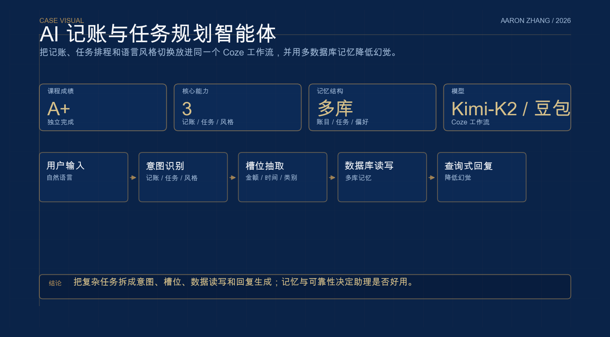

AI 记账与任务规划智能体
独立搭建一个集记账、语言风格切换、任务排程于一体的 Coze 工作流智能体，课程设计成绩 A+。
| 项目 |
课程设计 · 独立完成 |
| 时间 |
2025.11 – 2025.12 |
| 角色 |
独立完成 · 工作流设计 / 搭建 / 调试 |
| 关键词 |
Coze Kimi-K2 豆包 1.5 Pro 多数据库记忆 |
背景 / Context
日常记账和任务管理通常是两个割裂的工具：记账 App 不管任务，任务工具不管消费。把两者放进一个对话式智能体，可以同时处理「今天花了什么」和「今天要做什么」。
但 LLM 做个人助理有两个典型问题：
- 记不住：多轮对话后忘记之前的账目和任务。
- 会瞎编：没有可靠的数据存储时，模型容易编造金额或待办。
我的工作 / What I did
我基于 Coze 平台（Kimi-K2、豆包 1.5 Pro）独立搭建了一个复杂工作流智能体：
- 记账：识别用户的消费描述，抽取金额、类别、时间、备注，写入账目。
- 任务排程：识别待办事项，支持按时间 / 优先级整理任务。
- 语言风格切换：同一件事可以用不同语气表达，测试模型的角色一致性。
- 多重数据库记忆：用多个数据库分别存储账目、任务、偏好，减少上下文遗忘。
- 降低幻觉：让模型基于数据库查询结果回答，而不是凭记忆生成。
- 全流程调试：从意图识别、槽位抽取到数据库读写，逐段测试和迭代。
结果 / Impact
- 完成一个可运行的复杂工作流智能体，课程设计成绩 A+。
- 把「记账 + 任务 + 风格切换」三个能力放进同一个对话入口。
- 通过多数据库记忆和查询式回答，降低模型幻觉。
关键数据 / Key Numbers
| 指标 |
数值 |
口径 |
| 课程成绩 |
A+ |
课程设计 |
| 核心能力 |
3 类 |
记账 / 任务排程 / 风格切换 |
| 记忆结构 |
多数据库 |
账目 / 任务 / 偏好 |
| 模型 |
Kimi-K2、豆包 1.5 Pro |
Coze 工作流 |

图：用户输入、意图识别、槽位抽取、多库记忆与查询式回复的工作流。
结论 / Takeaways
- 复杂任务要拆成可测试的节点：意图识别、槽位抽取、数据库读写、回复生成，每一段都可以单独调试。
- 记忆是助理产品的核心：没有可靠的账目/任务存储，模型就会“看起来会”，但实际记不住、答不准。
- 查询式回答降低幻觉：先查数据库再生成，比让模型凭上下文回忆更可靠。
可迁移的能力 / What it shows
- 工作流拆解：把复杂任务拆成意图识别、槽位抽取、数据读写、回复生成。
- AI 产品思维：记忆、可靠性、风格一致性，决定助理「好不好用」。
- 独立交付：从设计、搭建到调试，一个人把原型跑通。
说明：该项目为课程设计。以上仅展示方案思路和个人贡献，不包含账号信息或完整提示词。